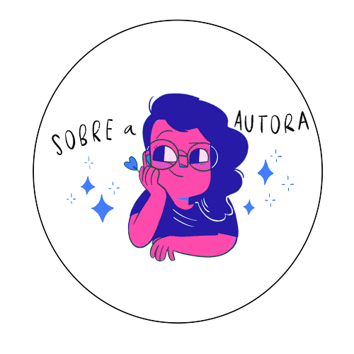

ILUSTRALU
Nascida em 1992, em Currais Novos, no Rio Grande do Norte, Luiza de Souza, desde criança, já mostrava interesse por quadrinhos, já que era apaixonada por desenhar. Com o passar dos anos, Ilustra Lu, como é conhecida, deixou de lado suas paixões e caiu na rotina, já que estava na faculdade de publicidade e se ocupava com as tarefas do dia a dia, até que em 2013, sofreu um grave acidente que a fez se afastar dos projetos que tinha e a sair do seu emprego e dando assim, um passo de volta à arte. Pós o acidente, ela voltou a criar, criou perfis nas redes sociais onde compartilhava ilustrações e "Lettering". Os frutos desse empenho, rende a ela cerca de 120 mil seguidores nas redes sociais e finalista com mais indicações na CCXP.
CARREIRA
Arlindo, seu maior sucesso, começou a ser postado em 2019, de início conquistou o coração de vários fãs, tanto que a campanha para a publicação física da obra foi um sucesso, tanto que excedeu o valor de arrecadação esperado e nos primeiros dois meses de pré-venda, se tornou o projeto com a maior arrecadação do Catarse até então, com R$385.603,00 (455% da meta) e 4.410 apoiadores. Após 2 meses de lançamento oficial, vendeu mais de 15 mil exemplares além de virar série documental produzida pela própria Luiza, que vem sendo compartilhado através do Youtube. Ilustra LU, é uma mulher bissexual, amada pelos fãs, vencedora do prêmio da maior categoria de quadrinhos da 1ª edição do CCXP Awards e que mostra não há coisa melhor do que trabalhar com aquilo que amamos, aposto que a pequena Luiza que adorava desenhar na infância, estaria orgulhosa se soubesse tudo que nossa Ilustra Lu alcançou e conquistou.